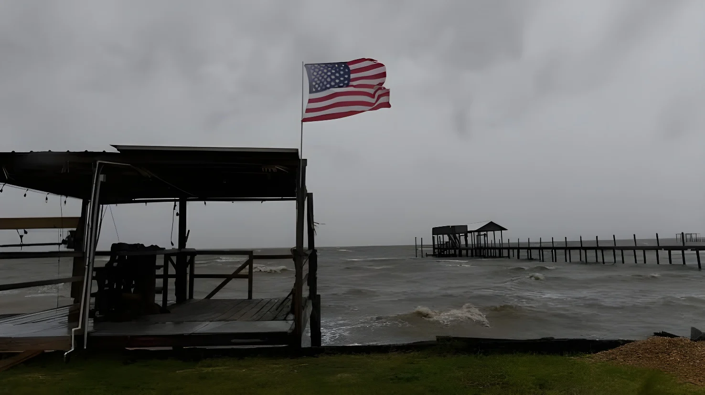

Le vendredi 9 octobre 2026 au soir, l'ouragan Isaias a touché terre près de Destin, en Floride, en catégorie 2 avec des vents de 105 miles à l'heure (170 km/h), avant de s'affaiblir en quelques heures et de devenir post-tropical au-dessus de l'Alabama. Il a fait au moins quatre morts, deux en Floride et deux en Alabama, et jusqu'à plus de 884 000 clients privés de courant. Trump a approuvé des déclarations d'urgence fédérales pour la Floride, l'Alabama et la Géorgie, tandis qu'environ 63 % de la production pétrolière du golfe du Mexique était suspendue.
Isaias est né le 6 octobre 2026 d'une zone de basse pression dans le sud-ouest du golfe du Mexique et a été baptisé le 7 octobre. Il est devenu le premier ouragan de la saison atlantique le 8 octobre, à égalité avec la date la plus tardive jamais relevée pour un premier ouragan depuis 1905, puis a atteint la catégorie 3 le 9 octobre, avec des vents de 120 miles à l'heure et une pression de 958 millibars. Il s'agit du neuvième système nommé de la saison, de son premier ouragan et de son premier ouragan majeur. La saison était restée inhabituellement calme à cause d'El Niño ; selon le climatologue Marc Alessi, des températures de surface record dans le golfe, liées au changement climatique, ont pu favoriser son intensification rapide.
Isaias a touché terre le vendredi soir près de Destin, en Floride, en catégorie 2, avec des vents de 105 miles à l'heure, à environ 165 kilomètres à l'ouest-nord-ouest de Panama City. C'est le premier ouragan à toucher le continent américain depuis deux ans. Il s'est affaibli en quelques heures et est devenu un cyclone post-tropical au-dessus de l'Alabama. La rafale la plus forte atteint 116 miles à l'heure à Santa Rosa Sound, en Floride. L'eau est montée de 4 pieds à Destin et de 5,6 pieds à Panama City, des chiffres qui incluent la marée.
| Mesure | Valeur |
|---|---|
| Pic d'intensité (9 octobre) | Catégorie 3, 120 mph, 958 mbar |
| Arrivée à terre (Destin) | Catégorie 2, 105 mph |
| Rafale maximale | 116 mph (Santa Rosa Sound) |
| Surcote à Panama City | 5,6 pieds |
| Pluie en 13 heures, Bellwood (Alabama) | > 1 pied |
Avant l'arrivée de la tempête, le gouverneur de Floride a déclaré l'état d'urgence dans 25 comtés et activé la Garde nationale, avec des évacuations obligatoires dans le comté d'Okaloosa et plusieurs îles-barrières. L'Alabama a décrété l'état d'urgence dans 40 comtés, Dauphin Island a ordonné l'évacuation et Mobile a imposé un couvre-feu. La Géorgie a aussi déclaré l'état d'urgence. Des dizaines de milliers de personnes ont évacué. Donald Trump a approuvé des déclarations d'urgence fédérales pour la Floride et l'Alabama le vendredi, pour la Géorgie le samedi, et annulé sa visite prévue samedi en Alabama.
Isaias, absorbé par un autre système, doit se dissiper ; risque d'inondations dans l'Est.
Isaias, devenu post-tropical, remonte vers le Tennessee ; panne de courant maximale.
Pic en catégorie 3 ; arrivée à terre près de Destin le soir en catégorie 2.
Isaias devient le premier ouragan de la saison.
La tempête est baptisée Isaias.
Naissance d'une dépression dans le sud-ouest du golfe du Mexique.
Au moins quatre personnes sont mortes. En Floride, dans le comté d'Escambia, une femme a été tuée par la chute d'un arbre sur sa maison, et un homme a été retrouvé mort dans un garage fermé où tournait un groupe électrogène, quatre membres de sa famille étant hospitalisés avec des blessures sans gravité. En Alabama, une personne est morte à Birmingham quand un arbre est tombé sur sa maison, et un deuxième décès a été confirmé dans le comté de Barbour, sans précision. Des toits de maisons, de résidences et de commerces ont été arrachés dans le nord-ouest de la Floride, le gymnase d'un lycée de Milton a été détruit et l'aéroport de Pensacola a subi des dégâts.
« L'histoire des inondations n'est pas terminée. »
— Ron DeSantis, gouverneur de Floride, 10 octobre 2026 (traduction)Les pannes ont dépassé 884 000 clients le samedi matin. À 14 h 21, plus de 700 000 foyers et entreprises étaient encore sans électricité, surtout en Floride (422 357) et en Alabama (200 930). La Géorgie a compté plus de 126 000 clients privés de courant, et une tornade a été confirmée dans le comté de Screven. Le comté de Houston, en Alabama, a fermé toutes ses routes à cause d'arbres et de lignes à terre.
Isaias est devenu post-tropical mais reste dangereux : jusqu'à 8 pouces de pluie sont attendus dans le sud de l'Alabama, le Panhandle de Floride et le sud-ouest de la Géorgie, avec des cumuls locaux de 15 pouces. Les Appalaches pourraient recevoir jusqu'à 10 pouces, ce qui expose les collines et les montagnes à des crues soudaines, et un risque de tornades subsiste de la Géorgie aux Carolines. À Caney Creek, en Floride, il est déjà tombé 12,06 pouces en 24 heures. Les rafales pouvaient atteindre 60 à 70 miles à l'heure dans les Smoky Mountains. Plus tôt, le précurseur de la tempête, associé à un front froid, avait déjà provoqué des inondations dans les États mexicains de Tamaulipas et de Veracruz.
Environ 63 % de la production pétrolière du golfe du Mexique, soit 1,3 million de barils par jour, et 56 % de sa production de gaz ont été suspendus, et des plateformes de Chevron et de Shell ont été évacuées. Le département de l'Énergie a autorisé des échanges d'urgence de brut de la réserve stratégique pour maintenir les raffineries en marche, avec Exxon Mobil et BP America. Le choc s'ajoute à celui d'un diesel déjà à plus de six dollars le gallon, que Trump tente de faire baisser par son accord sur le diesel russe.
Isaias illustre le paradoxe des ouragans modernes : une intensification rapide au-dessus d'un golfe très chaud, une arrivée à terre brève, puis un affaiblissement tout aussi rapide, alors que l'essentiel des dégâts vient ensuite de la pluie, des arbres tombés et des pannes. Le bilan humain de quatre morts, dont deux par chute d'arbre et un par monoxyde de carbone probable d'un groupe électrogène, rappelle que les risques dépassent le vent.
Politiquement et économiquement, l'événement tombe mal : à trois semaines des élections de mi-mandat, la gestion de la crise par la Maison-Blanche et l'effet sur le marché pétrolier comptent autant que les dégâts. La vraie facture, ni chiffrée ni connue, dépendra de l'ampleur des inondations dans l'Est.
On the evening of Friday, October 9, 2026, Hurricane Isaias made landfall near Destin, Florida, as a Category 2 storm with 105 mph winds, before weakening within hours and becoming post-tropical over Alabama. It killed at least four people, two in Florida and two in Alabama, and left more than 884,000 customers without power at the peak. Trump approved federal emergency declarations for Florida, Alabama and Georgia, while about 63% of Gulf of Mexico oil production was shut in.
Isaias formed on October 6, 2026 from a low-pressure area in the southwestern Gulf of Mexico and was named on October 7. It became the first hurricane of the Atlantic season on October 8, tying the latest first-hurricane date on record since 1905, then reached Category 3 on October 9, with 120 mph winds and a pressure of 958 millibars. It is the season's ninth named storm, first hurricane and first major hurricane. The season had been unusually quiet because of El Niño; according to climatologist Marc Alessi, record surface temperatures in the Gulf, linked to climate change, may have helped its rapid intensification.
Isaias came ashore on Friday evening near Destin, Florida, as a Category 2, with 105 mph winds, about 165 kilometers west-northwest of Panama City. It is the first hurricane to hit the American mainland in two years. It weakened within hours and became a post-tropical cyclone over Alabama. The strongest gust reached 116 mph at Santa Rosa Sound, Florida. Water rose 4 feet in Destin and 5.6 feet in Panama City, figures that include the tide.
| Measure | Value |
|---|---|
| Peak intensity (October 9) | Category 3, 120 mph, 958 mbar |
| Landfall (Destin) | Category 2, 105 mph |
| Peak gust | 116 mph (Santa Rosa Sound) |
| Water level, Panama City | 5.6 feet |
| Rain in 13 hours, Bellwood (Alabama) | > 1 foot |
Before the storm, Florida's governor declared a state of emergency in 25 counties and activated the National Guard, with mandatory evacuations in Okaloosa County and several barrier islands. Alabama declared a state of emergency in 40 counties, Dauphin Island ordered evacuations and Mobile imposed a curfew. Georgia also declared a state of emergency. Tens of thousands of people evacuated. Donald Trump approved federal emergency declarations for Florida and Alabama on Friday and for Georgia on Saturday, and canceled a planned Saturday visit to Alabama.
Isaias, absorbed by another system, is expected to dissipate; flood risk in the East.
Isaias, now post-tropical, moves toward Tennessee; peak power outage.
Peaks at Category 3; makes landfall near Destin in the evening as a Category 2.
Isaias becomes the season's first hurricane.
The storm is named Isaias.
A depression forms in the southwestern Gulf of Mexico.
At least four people died. In Florida, in Escambia County, a woman was killed when a tree fell on her house, and a man was found dead in a closed garage where a generator was running, with four family members hospitalized with non-life-threatening injuries. In Alabama, one person died in Birmingham when a tree fell on their house, and a second death was confirmed in Barbour County, without details. Roofs were torn off homes, condos and businesses in the Florida Panhandle, a Milton high school gymnasium was destroyed and Pensacola's airport sustained damage.
"The flooding story is not over."
— Ron DeSantis, Governor of Florida, October 10, 2026Outages exceeded 884,000 customers on Saturday morning. At 2:21 p.m., more than 700,000 homes and businesses were still without electricity, mostly in Florida (422,357) and Alabama (200,930). Georgia counted more than 126,000 customers without power, and a tornado was confirmed in Screven County. Houston County, Alabama, closed all its roads because of downed trees and power lines.
Isaias has become post-tropical but remains dangerous: up to 8 inches of rain are expected in southern Alabama, the Florida Panhandle and southwest Georgia, with local totals of 15 inches. The Appalachians could receive up to 10 inches, exposing hills and mountains to flash floods, and a tornado risk remains from Georgia to the Carolinas. At Caney Creek, Florida, 12.06 inches have already fallen in 24 hours. Gusts could reach 60 to 70 mph in the Smoky Mountains. Earlier, the storm's precursor, combined with a cold front, had already caused flooding in the Mexican states of Tamaulipas and Veracruz.
About 63% of Gulf of Mexico oil production, or 1.3 million barrels a day, and 56% of its gas production were shut in, and Chevron and Shell platforms were evacuated. The Energy Department authorized emergency crude oil exchanges from the strategic reserve to keep refineries running, with Exxon Mobil and BP America. The shock comes on top of diesel already above six dollars a gallon, which Trump is trying to lower through his Russian diesel deal.
Isaias illustrates the paradox of modern hurricanes: rapid intensification over a very warm Gulf, a brief landfall, then an equally fast weakening, while most of the damage comes afterward from rain, fallen trees and outages. The human toll of four dead, including two from falling trees and one from probable carbon monoxide from a generator, is a reminder that the risks go beyond wind.
Politically and economically, the event comes at a bad moment: three weeks before the midterms, the White House's handling of the crisis and the effect on the oil market matter as much as the damage. The real bill, neither counted nor known, will depend on the scale of the flooding in the East.